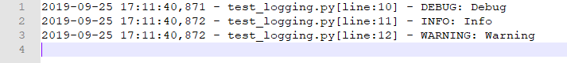

Python logging模块
在Python开发中，无论仅仅是一个爬虫脚本还是web服务器开发，又或者是上线了一个ML&DL模型，都会需要保存日志，其中，Python的logging模块就是一个记录日志的好帮手，在保持极低的使用门槛的同时也提供了灵活和个性化的方法。
日志记录的重要性
在开发过程中，如果程序运行出现了问题，我们是可以使用我们自己的 Debug 工具来检测到到底是哪一步出现了问题，如果出现了问题的话，是很容易排查的。
但程序开发完成之后，我们会将它部署到生产环境中去，这时候代码相当于是在一个黑盒环境下运行的，我们只能看到其运行的效果。尤其是部署在服务器或者以容器化运行的时候，是不能直接看到代码运行过程中每一步的状态的。
如果我们当时有做日志记录的话，不论是正常运行还是出现报错，都有相关的时间记录，状态记录，错误记录等，那么这样我们就可以方便地追踪到在当时的运行过程中出现了怎样的状况，从而可以快速排查问题。
因此，日志记录是非常有必要的，任何一款软件如果没有标准的日志记录，都不能算作一个合格的软件。作为开发者，我们需要重视并做好日志记录过程。
基础方法
Python的logging模块提供了一种即插即用的基础方法。
import logging
logging.basicConfig(level=logging.INFO,
filename='./log.txt',
filemode='w+',
format='%(asctime)s - %(filename)s[line:%(lineno)d] - %(levelname)s: %(message)s')
logger = logging.getLogger(__name__)
logger.debug('Debug')
logger.info('Info')
logger.warning('Warning')在这里我们首先引入了 logging 模块，然后进行了一下基本的配置，这里通过 basicConfig 配置了 level 信息和 format 信息，这里 level 配置为 INFO 信息，即只输出 INFO 及更高级别的信息。另外这里指定了 format 格式的字符串，包括 asctime、filename、lineno、levelname、message 五个内容，分别代表运行时间、文件名称、日志行号、日志等级和日志内容。datefmt选项指定了asctime的输出格式，filename指定输出文件路径，filemode表明文件打开方式。这样输出内容便是组合而成的内容了，这就是 logging 的全局配置。
注意：logging可以自动创建文件，但是不能创建文件夹。filename路径中带有不存在的文件夹会出错。
接下来声明了一个 Logger 对象，它就是日志输出的主类，调用对象的 info() 方法就可以输出 INFO 级别的日志信息，调用 debug() 方法就可以输出 DEBUG 级别的日志信息，非常方便。在初始化的时候我们传入了模块的名称，这里直接使用 __name__来代替了，就是模块的名称，如果直接运行这个脚本的话就是 __main__，如果是 import 的模块的话就是被引入模块的名称，这个变量在不同的模块中的名字是不同的，所以一般使用 __name__ 来表示就好。
打印出的日志如下：

logging.basicConfig()函数中可通过具体参数来更改logging模块默认行为，可用参数有:
- filename：日志输出的文件名，这个选项会启用FiledHandler（后边会具体讲解handler的概念），这样日志会被存储在指定的文件中。 没有这个参数，则日志会直接输出到控制台。
- filemode：文件打开方式，在指定了filename时使用这个参数，默认值为“a”还可指定为“w”。 分别代表追加写入和清除后写入。
- format：指定handler使用的日志显示格式。 具体可以参考官方文档
- datefmt：指定日期时间格式。
- level：设置rootlogger； 默认的日志级别设置为WARNING（日志级别等级CRITICAL > ERROR > WARNING > INFO > DEBUG ） ，每个等级其实都对应了一个数值。例如DEBUG对应10而WARNING对应30。
- stream：用指定的stream创建StreamHandler。可以指定输出到sys.stderr,sys.stdout或者文件，默认为sys.stderr。若同时列出了filename和stream两个参数，则stream参数会被忽略。
基础方法的缺陷
上述的基本方法配置简单，使用方便，但是遇到复杂情况则会显得捉襟见肘。比如我们需要同时把日志输出到控制台和文件中，又或者是需要把不同级别的日志输出到不同的文件中。另外，我们在开发时需要导入很多模块，某些模块本身也使用了logging来输出日志，这时候就会造成日志的混乱。
这就需要一个叫作Logger 的对象来帮忙，下面将对他进行详细介绍，现在这里先学习怎么实现把日志既要输出到控制台又要输出到文件的功能。
进阶用法
既输出到控制台又输出到文件
import logging
# 第一步，创建一个logger
logger = logging.getLogger()
logger.setLevel(logging.INFO) # Log等级总开关
# 第二步，创建一个handler，用于写入日志文件
logfile = './log.log'
fh = logging.FileHandler(logfile, mode='w')
fh.setLevel(logging.DEBUG) # 输出到file的log等级的开关
# 第三步，再创建一个handler，用于输出到控制台
ch = logging.StreamHandler()
ch.setLevel(logging.WARNING) # 输出到console的log等级的开关
# 第四步，定义handler的输出格式
formatter = logging.Formatter("%(asctime)s - %(filename)s[line:%(lineno)d] - %(levelname)s: %(message)s")
fh.setFormatter(formatter)
ch.setFormatter(formatter)
# 第五步，添加到handler
logger.addHandler(fh)
logger.addHandler(ch)
# 日志
logger.debug('this is a logger debug message')
logger.info('this is a logger info message')
logger.warning('this is a logger warning message')
logger.error('this is a logger error message')这里我们没有再使用 basicConfig 全局配置，而是先声明了一个 Logger 对象，然后指定了其对应的 Handler 为 FileHandler 对象和StreamHandler对象，最后给 Logger 对象添加对应的 Handler 即可，最后可以发现日志就会被输出到 log.log 中。
实现这个功能一共分5步：
第一步，创建一个logger；第二步，创建一个handler，用于写入日志文件；第三步，再创建一个handler，用于输出到控制台；第四步，定义handler的输出格式；第五步，将logger添加到handler里面。
我们还可以使用其他的 Handler 进行日志的输出，logging 模块提供的 Handler 有：
- StreamHandler：logging.StreamHandler；日志输出到流，可以是 sys.stderr，sys.stdout 或者文件。
- FileHandler：logging.FileHandler；日志输出到文件。
- BaseRotatingHandler：logging.handlers.BaseRotatingHandler；基本的日志回滚方式。
- RotatingHandler：logging.handlers.RotatingHandler；日志回滚方式，支持日志文件最大数量和日志文件回滚。
- TimeRotatingHandler：logging.handlers.TimeRotatingHandler；日志回滚方式，在一定时间区域内回滚日志文件。
- SocketHandler：logging.handlers.SocketHandler；远程输出日志到TCP/IP sockets。
- DatagramHandler：logging.handlers.DatagramHandler；远程输出日志到UDP sockets。
- SMTPHandler：logging.handlers.SMTPHandler；远程输出日志到邮件地址。
- SysLogHandler：logging.handlers.SysLogHandler；日志输出到syslog。
- NTEventLogHandler：logging.handlers.NTEventLogHandler；远程输出日志到Windows NT/2000/XP的事件日志。
- MemoryHandler：logging.handlers.MemoryHandler；日志输出到内存中的指定buffer。
- HTTPHandler：logging.handlers.HTTPHandler；通过”GET”或者”POST”远程输出到HTTP服务器。
下面我们使用三个 Handler 来实现日志同时输出到控制台、文件、HTTP 服务器：
import logging
from logging.handlers import HTTPHandler
import sys
logger = logging.getLogger(__name__)
logger.setLevel(level=logging.DEBUG)
# StreamHandler
stream_handler = logging.StreamHandler(sys.stdout)
stream_handler.setLevel(level=logging.DEBUG)
logger.addHandler(stream_handler)
# FileHandler
file_handler = logging.FileHandler('log.log')
file_handler.setLevel(level=logging.INFO)
formatter = logging.Formatter('%(asctime)s - %(name)s - %(levelname)s - %(message)s')
file_handler.setFormatter(formatter)
logger.addHandler(file_handler)
# HTTPHandler
http_handler = HTTPHandler(host='localhost:8001', url='log', method='POST')
logger.addHandler(http_handler)
# Log
logger.info('This is a log info')
logger.debug('Debugging')
logger.warning('Warning exists')
logger.info('Finish')运行之前我们需要先启动一个 HTTP Server，并运行在 8001 端口，并且定义一个 log 接口，用来接收日志。
在这里 StreamHandler 对象我们没有设置 Formatter，因此控制台只输出了日志的内容，而没有包含时间、模块等信息，而 FileHandler 我们通过 setFormatter() 方法设置了一个 Formatter 对象，因此输出的内容便是格式化后的日志信息。
运行之后控制台会输出纯message日志，log.log文件会保存asctime、name、levelname修饰火的message日志。
HTTP Server 会收到控制台输出的信息。
这样一来，我们就通过设置多个 Handler 来控制了日志的多目标输出。
捕获 Traceback
如果遇到错误，我们更希望报错时出现的详细 Traceback 信息，便于调试，利用 logging 模块我们可以非常方便地实现这个记录，我们用一个实例来感受一下：
import logging
logger = logging.getLogger(__name__)
logger.setLevel(level=logging.DEBUG)
# Formatter
formatter = logging.Formatter('%(asctime)s - %(name)s - %(levelname)s - %(message)s')
# FileHandler
file_handler = logging.FileHandler('result.log')
file_handler.setFormatter(formatter)
logger.addHandler(file_handler)
# Log
logger.info('Start')
try:
result = 10 / 0
except Exception:
logger.error('A Fail Happens!', exc_info=True)
logger.info('Finished')在 error() 方法中添加了一个参数，将 exc_info 设置为了 True，这样我们就可以输出执行过程中的信息了，即完整的 Traceback 信息。
运行结果如下：
2019-09-29 16:00:15,382 - __main__ - INFO - Start
2018-09-29 16:00:15,382 - __main__ - ERROR - A Fail Happens!
Traceback (most recent call last):
File "/vscode/logging/test.py", line 17, in <module>
result = 10 / 0
ZeroDivisionError: division by zero
2019-09-29 16:00:15,383 - __main__ - INFO - Finished配置共享
在写项目的时候，我们肯定会将许多配置放置在许多模块下面，这时如果我们每个文件都来配置 logging 配置那就太繁琐了，logging 模块提供了父子模块共享配置的机制，会根据 Logger 的名称来自动加载父模块的配置。
首先定义一个 main.py 文件：
import logging
import core
logger = logging.getLogger('main')
logger.setLevel(level=logging.DEBUG)
# Handler
handler = logging.FileHandler('result.log')
handler.setLevel(logging.INFO)
formatter = logging.Formatter('%(asctime)s - %(name)s - %(levelname)s - %(message)s')
handler.setFormatter(formatter)
logger.addHandler(handler)
logger.info('Main Info')
logger.error('Main Error')
core.run()这里配置了日志的输出格式和文件路径，同时定义了 Logger 的名称为 main，然后引入了另外一个模块 core，最后调用了 core 的 run() 方法。
接下来我们定义 core.py，内容如下：
import logging
logger = logging.getLogger('main.core')
def run():
logger.info('Core Info')
logger.debug('Core Debug')
logger.error('Core Error')这里定义了 Logger 的名称为 main.core，前面我们介绍过logging 模块会根据 Logger 的名称来自动加载模块的配置。注意 main.core开头是 main，main和core之间的‘.’表示core从main继承而来，main即刚才我们在 main.py 里面的 Logger 的名称，这样 core.py 里面的 Logger 就会复用 main.py 里面的 Logger 配置，而不用再去配置一次了。
TimedRotatingFileHandler按时间切割日志
按时间切割日志是一个比较常用的功能。
每天生成的日志文件都写在了一个文件中。但是日志信息不可能输出到单一的一个文件中。
原因有二：1.日志文件越来越大会影响系统的性能。2.日志文件格式不够清晰，比如我想看今天的日志，不太方便找到的今天的日志信息(即使对日志输出做了时间提示)
这时候我们需要用到上面提到的TimedRotatingFileHandler`进行日志按周(W)、天(D)、时(H)、分(M)、秒(S)切割。
先看一个生产过程中常用的例子：
import time
import logging
import os
from logging import handlers
def _logging(**kwargs):
level = kwargs.pop('level', None)
filename = kwargs.pop('filename', None)
datefmt = kwargs.pop('datefmt', None)
format = kwargs.pop('format', None)
if level is None:
level = logging.DEBUG
if filename is None:
filename = 'default.log'
if datefmt is None:
datefmt = '%Y-%m-%d %H:%M:%S'
if format is None:
format = '%(asctime)s [%(module)s] %(levelname)s [%(lineno)d] %(message)s'
log = logging.getLogger(filename)
format_str = logging.Formatter(format, datefmt)
# backupCount 保存日志的数量，过期自动删除
# when 按什么日期格式切分(这里方便测试使用的秒)
th = handlers.TimedRotatingFileHandler(filename=filename, when='S', backupCount=3, encoding='utf-8')
th.setFormatter(format_str)
th.setLevel(logging.INFO)
log.addHandler(th)
log.setLevel(level)
return log
os.makedirs("./logs", exist_ok=True)
logger = _logging(filename='./logs/default.log')
if __name__ == '__main__':
while True:
time.sleep(0.1)
logger.info('logging')生成的日志文件格式是文件名+时间的格式，没有设置时间的话默认设置到了秒(这里是按秒切割)
when 是一个字符串的定义如下：
- “S”: Seconds
- “M”: Minutes
- “H”: Hours
- “D”: Days
- “W”: Week day (0=Monday)
- “midnight”: Roll over at midnight
interval 是指等待多少个单位when的时间后，Logger会自动重建文件，当然，这个文件的创建
取决于filename+suffix，若这个文件跟之前的文件有重名，则会自动覆盖掉以前的文件，所以
有些情况suffix要定义的不能因为when而重复。
backupCount 是保留日志个数。默认的0是不会自动删除掉日志。若设10，则在文件的创建过程中
库会判断是否有超过这个10，若超过，则会从最先创建的开始删除。